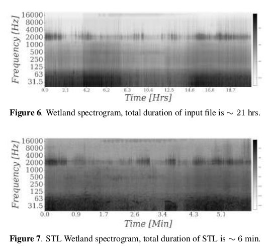

Quiénes integramos el proyecto AuMiLab
Contents
2. Quiénes integramos el proyecto AuMiLab#
2.1. Integrantes#
{kind=link}
3. Primeros pasos en minería y etiquetas de clases en imágenes:#
3.1. 2018-2020. Tesis de pregrado, Ingeniero Civil en Informática, Víctor Vargas S.#
Sistema de reconocimiento automático de gestos estáticos del alfabeto de la lengua de señas chilena
{kind=link}
{kind=link}
{kind=link}
from IPython.display import YouTubeVideo
YouTubeVideo("yMAlNTehnwI", width=712, height=420)
from IPython.display import YouTubeVideo
YouTubeVideo("Aw_emy_Exqo", width=712, height=420)
3.2. 2018-2020. Tesis de pregrado, Ingeniera Civil Acústico, Yetzabeth González C.#
Diseño e implementación de sistema de traducción de voz o texto, a lengua de señas Chilena mediante un avatar
{kind=link}
{kind=link}
{kind=link}
{kind=link}
{kind=link}
from IPython.display import YouTubeVideo
YouTubeVideo("cKrSgEtiAms", width=712, height=420)
4. Primeros pasos en minería y etiquetas de clases en audios#
4.1. 2019-2021 Proyecto de investigación Fondecyt#
Investigador Principal: Dr. Felipe Otondo. Método de time-lapse sonoro para la puesta en valor del patrimonio sonoro de humedales urbanos.
4.2. Uso práctico de sound-time-lapse para espectrogramas de larga duración.#

Grabadores de audio.
Grabaciones de paisajes sonoros en tres humedales urbanos Valdivianos.
Grandes volúmenes de grabación:
1 año completoDocumentación de una base de datos.
{kind=link}
{kind=link}
4.3. Enero 2021: Primer dataset de audios de humedales urbanos#
Miraflores,
Parque Urbano,
Angachille
720 audios en total (de duración 5 min c/u).
Etiquetado fuerte:
Una semana de Octubre 2019.
Una semana de Enero 2020.
Usamos dos técnicas no lineales de reducción de dimensionalidad para visualización de features:
UMAP - Uniform Manifold Approximation and Projection
t-SNE - t-distributed Stochastic Neighbor Embedding
Utilizamos este dataset para entrenar un modelo de aprendizaje profundo basado en una red detectora de eventos sonoros polifónicos (SEDnet)
Detectar automáticamente clases de eventos sonoros en los humedales urbanos
{kind=link}
{kind=link}
{kind=link}